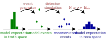
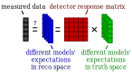
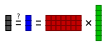
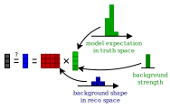

Introduction
Forward folding
ReMU is a framework for statistical analyses of binned counting experiments. It follows a “forward-folding” approach to interpreting the data. To understand the principle of forward folding we must first understand how we interpret the process of measuring something:

Nature provides certain expectation values for how many events with different properties will happen in the detector. These expectation values do not have to be integers, as they only describe the average number of events that would occur in each bin if you repeat the experiment many times. In the actual experiment, we only get a sample from these expectation values. Since these are actually occurring events, their numbers must be integers. They are randomly distributed around the expectation values.
We cannot directly observe these events though. Depending on the properties of the events and the detector that is recording them, some events are missed (detection efficiency) and the reconstructed properties are not exactly the true properties of the events (smearing). The only information that is available to us is the reconstructed sample of events.
In general, we are interested in the expectation values in the true properties space of the event (truth space), as the reconstructed properties depend on the specific experiment (reco space). The best way of checking whether a certain model prediction is compatible with the measured data, is to do a full detector simulation:
By simulating a large number of events it is possible to calculate the expectation value in the reconstructed space. This can then be compared to the recorded data using Poissonian statistics.
This is a very involved process that requires a lot of computing power and expert knowledge of the detector. It is usually only done within the experiments’ collaborations and only for a few select models. This process can be sped up though, if one can find a universal linear relation between the expectation values in truth (\mu_j) and in reco space (\nu_i):
\nu_i = \sum_j P(\text{reco bin} = i \,|\, \text{truth bin} = j) \cdot \mu_j
That relation is the detector response matrix R_{ij} = P(\text{reco bin} = i \,|\, \text{truth bin} = j):

Multiplying a vector of truth expectation values with a matrix is a computationally simple task. And with the right tools it should be very easily done also by non-experts (of the detector). ReMU aims to be such a tool. With the tools, the detector response matrix, and the actual data, it should be possible to test many different models on short time scales:
This multiplication of the model predictions with the response matrix is often called “forward folding”. It translates universal model predictions in truth space to experiment-specific model predictions in reco space. It can be seen as alternative (or complementary) approach to “unfolding”, where the measured experiment-specific data in reco space is translated to an unfolded universal spectrum in truth space.
Building the response matrix
Using a response matrix does not require expert knowledge of the detector it models. Creating the response matrix and making sure it has the desired properties does.
The most important property of a “correct” response matrix is its model-independence. No matter what physics model you use to generate the truth-space expectation values \mu_j, the linear coefficients R_{ij} must stay unchanged (within their uncertainties, see below). Only then can you use the same matrix to test the many different models that you are interested in.
In practice this usually means that the binning in truth space must be quite fine, and in more variables than one is interested in for the measurement. For example, if in a particle physics experiment one is interested in the momentum of a particle, but the detection efficiency depends on the particle’s direction, it is necessary to also distinguish events by (i.e. “to bin in”) the true direction of the particle. The binning in reco space does not have to be affected by this, and can be chosen by the physics aims and expected number of events. This can lead to very asymmetric response matrices:
ReMU provides Binning classes to define the truth and reco binning:
with open("reco-binning.yml", 'r') as f:
reco_binning = binning.yaml.full_load(f)
reco_binning.fill_from_csv_file("real_data.txt")
It also provides methods to plot the content of the bins:
pltr = plotting.get_plotter(reco_binning)
pltr.plot_values()
pltr.savefig("modelA_data.png")

These are then combined into a ResponseMatrix object. The default
method to populate the response matrix is by filling it event by event from a
CSV file with the reconstructed and true properties of the events:
with open("reco-binning.yml", 'rt') as f:
reco_binning = binning.yaml.full_load(f)
with open("coarse-truth-binning.yml", 'rt') as f:
truth_binning = binning.yaml.full_load(f)
respA = migration.ResponseMatrix(reco_binning, truth_binning)
respA.fill_from_csv_file("../00/modelA_data.txt")
See Example 00 – Basic usage of binnings and Example 01 – Building a response matrix for details.
ReMU also supports Panda’s DataFrame objects as input for filling
the matrices. Together with the uproot package, this allows it to read
in ROOT files. See Example PD – Advanced data loading with pandas and ROOT.
Detector uncertainties
ReMU bases all comparisons of data and model predictions on the Poissonian likelihood, i.e. the probability of measuring the given reconstructed data, assuming that the given model is true:
L(\mu) = \prod_i \frac{\nu_i^{n_i} \exp(-\nu_i)}{n_i!} = \prod_i \frac{(R_{ij}\mu_j)^{n_i} \exp(-R_{ij}\mu_j)}{n_i!}
Here we are using the Einstein summation convention and sum over all doubled indices, i.e. R_{ij}\mu_j = \sum_j R_{ij}\mu_j.
This likelihood assumes a perfect knowledge of the response matrix elements, i.e. the detector performance. This is rarely the case. Usually the detector properties (like resolutions and efficiencies) are only known within given uncertainties. This knowledge can be incorporated into the likelihood:
L(\mu) = \int_{\phi} P(\phi) \prod_i \frac{(R(\phi)_{ij}\mu_j)^{n_i} \exp(-R(\phi)_{ij}\mu_j)}{n_i!}
The response matrix R(\phi)_{ij} now depends on the detector parameters \phi. The prior knowledge of these parameters lies in their probability distribution P(\phi).
In practical terms it can be very hard to do the integration over all possible response matrices. ReMU thus replaces the infinite integral with a sum over a (sufficiently large) set of matrices sampled from P(\phi):
L(\mu) = \frac{1}{N_{\text{toys}}} \sum_{t}^{N_{\text{toys}}} \prod_i \frac{(R^t_{ij}\mu_j)^{n_i} \exp(-R^t_{ij}\mu_j)}{n_i!}
It is common practice to do an analysis with many different assumed detector properties to evaluate systematic uncertainties. The single instances of the analysis are often called “universes” or “toys”. Each toy (with index t) can be used to create its corresponding response matrix R^t_{ij}. The set of all toy matrices will then include the expert knowledge of the detector uncertainties, and make it available for the use by non-experts.
When testing models against the data, each toy matrix will yield its own reco expectation values and its own Poissonian likelihood. The average over all toy likelihoods yields the overall likelihood of the tested model:

ReMU handles all of this in the background in the provided
LikelihoodCalculator class. Its instances are created with the
measured data and the toy response matrices provided by the detector experts.
The user then only has to provide a model to be tested and it will return the
total likelihood including all detector effects:
data_model = likelihood.PoissonData(data)
matrix_predictor = likelihood.ResponseMatrixPredictor(response_matrix)
calc = likelihood.LikelihoodCalculator(data_model, matrix_predictor)
log_likelihood = calc(model)
See Example 02 – Simple model fits and Example 03 – Detector uncertainties for details.
Frequentist analyses
ReMU offers a couple of methods and classes to help with the statistical analysis and interpretation of the likelihood information obtained as described above. For example, the likelihood is only well defined if the model has no free parameters and all expectation values in truth space are known/predicted.
To deal with models that are not fully constrained, ReMU offers the option to
compose (or “chain”) Predictor objects. This way it is possible to
create likelihood calculators that accept arbitrary model parameters, for
example template weights:
modelA_shape = likelihood.TemplatePredictor([modelA])
modelA_reco_shape = matrix_predictor.compose(modelA_shape)
calcA = likelihood.LikelihoodCalculator(data_model, modelA_reco_shape)
log_likelihood = calcA(template_weight)
To actually do hypothesis tests, ReMU provides the HypothesisTester
class:
testA = likelihood.HypothesisTester(calcA)
testA.likelihood_p_value(template_weight)
testA.max_likelihood_p_value()
testA.max_likelihood_ratio_p_value(template_weight)
Likelihood ratio p-values are especially useful to construct confidence intervals for parameters of a model:
for v in values:
p = testA.max_likelihood_ratio_p_value([v])
p_values.append(p)
If multiple models share a parameter, this can be used to easily compare how the model assumptions influence the resulting confidence intervals. Here is a comparison of the total normalisation of two different templates, each with and without considering the detector systematics:

See Example 02 – Simple model fits and Example 03 – Detector uncertainties for details.
Bayesian analyses
ReMU also offers methods for Bayesian analyses, especially to do a Markov Chain Monte Carlo (MCMC) sampling of the posterior probability distribution of hypothesis parameters:
samplerA = likelihood_utils.emcee_sampler(calcA)
guessA = likelihood_utils.emcee_initial_guess(calcA)
state = samplerA.run_mcmc(guessA, 200*50)
chain = samplerA.get_chain(flat=True)
fig, ax = plt.subplots()
ax.hist(chain[:,0])
ax.set_xlabel("model A weight")
fig.savefig("burn_long.png")

This can easily handle many free parameters at once:
combined = likelihood.TemplatePredictor([modelA, modelB])
calcC = calc.compose(combined)
samplerC = likelihood_utils.emcee_sampler(calcC)
guessC = likelihood_utils.emcee_initial_guess(calcC)
state = samplerC.run_mcmc(guessC, 200*50)
chain = samplerC.get_chain(flat=True)
fig, ax = plt.subplots()
ax.hist2d(chain[:,0], chain[:,1])
ax.set_xlabel("model A weight")
ax.set_ylabel("model B weight")
fig.savefig("combined.png")

See Example 04 – Markov Chain Monte Carlo for details.
Backgrounds
Real experiments have to deal not only with the loss of events (efficiency) and the slight mis-reconstruction of event properties (smearing), but also with the erroneous inclusion of events in the data that are not actually part of the signal definition (background). ReMU is able to handle these events organically. For this, the response matrix must simply provide a set of truth bins that correspond to the background events:

Depending on the type of background, the model builders might not be able to
predict the expectation values of the background. In this case, the background
expectation values can be left free-floating, as nuisance parameters
in the CompositeHypothesis.
This can lead to a high number of degrees of freedom that make likelihood fits very difficult, though. Also, the background could be such that the measured data is not good at constraining its contribution. To deal with that, the detector experts can provide one or many background templates that describe the background’s shape and/or strength in truth space. These can then be added to the signal predictions as is, or as part of a simultaneous fit:
combined = likelihood.TemplatePredictor([modelA, modelB, background])
calcC = calc.compose(combined)
For background that is detector specific and does not depend (much) on (interesting) physics-model parameters, the background templates could also be made a part of the response matrix:
See Example 05 – Backgrounds for details.
Flux integration
So far we have only talked about the translation of expectation values of true event numbers to expectation values of reconstructed event numbers. To calculate the expected number of true events, it is often necessary to assume a certain flux of incoming particles or exposure of an experiment. These exposures themselves are not certain though and it is usually undesirable to have the users of a data set deal with the flux uncertainties in their event predictions.
In the forward-folding scheme, the flux uncertainties can naturally be incorporated into the detector uncertainties. To calculate event number in different true kinematic bins, a cross section matrix is multiplied with an exposure vector. Each row of the matrix corresponds to a true kinematic bin for which we want to calculate the event numbers, and each column corresponds to one energy bin in the flux/exposure.
Uncertainties are again handled by providing multiple varied exposure vectors, and those can then either be matched one-to-one or in a Cartesian product with the response matrix variations to calculate the varied reconstruction expectation values and likelihoods.

See Example 06 – Cross sections & flux uncertainties for details.